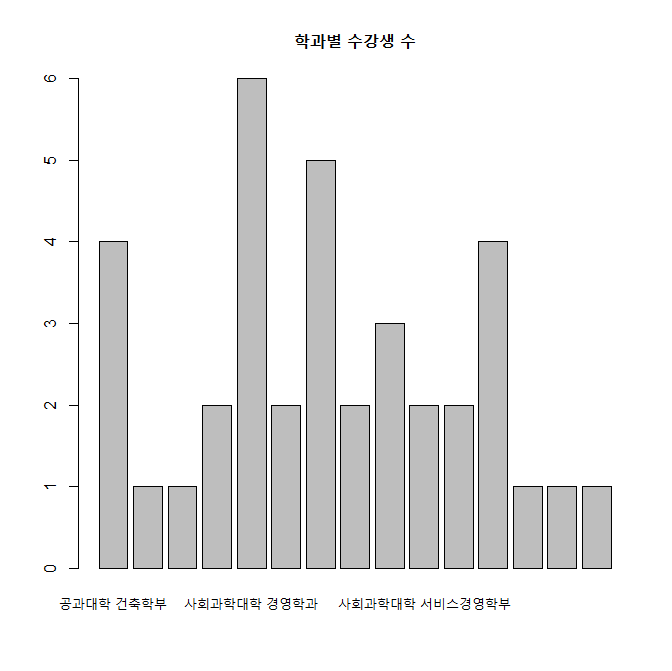

파일 불러오기(Import)
파일 불러오기(Import)1. 외부 파일의 종류 2. 텍스트 파일 불러오기 2-1. 텍스 파일의 형식2-2. 텍스트파일 읽는 함수 1) read.table(), read.csv() 함수 예제 2) read_csv 함수 예제 3) 예제: 수강생 자료 3. 엑셀 파일 불러오기 3-1. 엑셀파일 불러오기3-2. 엑셀 파일로 저장하기
1. 외부 파일의 종류
1) 텍스트파일 2) 엑셀파일 3) xml/json파일 4) 기타 : SPSS, SAS 데이터 파일
2. 텍스트 파일 불러오기
2-1. 텍스 파일의 형식
1) 텍스트자료에서 첫번째 줄은 '변수이름'을 나타내며, 두번째 줄부터 '데이터'가 입력됨
2) '데이터'와 '데이터'를 구분하는 문자를 '구분자(seperator)'라고 하며 주로 '공백(" ")', 콤마(","), TAB("\t") 등이 사용됨
• 텍스트 파일의 예 (첫줄은 변수명, 두번째부터는 공백으로 구분된 자료값)
xxxxxxxxxxSurv N Class Age Sex20 23 Crew Adult Female192 862 Crew Adult Male1 1 First Child Female5 5 First Child Male13 13 Second Child Female
• 구분자가 콤마인 파일: 보통 CSV파일(Comma Separated Values)로 저장됨
xxxxxxxxxxSurv,N,Class,Age,Sex20,23,Crew,Adult,Female192,862,Crew,Adult,Male1,1,First,Child,Female5,5,First,Child,Male13,13,Second,Child,Female
2-2. 텍스트파일 읽는 함수
1) read.table(), read.csv(), read.delim() 2) read_csv(), read_delim() : readr패키지를 이용
1) read.table(), read.csv() 함수 예제
데이터 세트 : titanic.txt
xxxxxxxxxxtitanic <- read.table("c:/temp/titanic.txt", header=T, sep="\t")head(titanic)
결과 :
xxxxxxxxxx> titanic <- read.table("c:/temp/titanic.txt", header=T, sep="\t")> head(titanic)## X Name PClass Age## 1 1 Allen, Miss Elisabeth Walton 1st 29.00## 2 2 Allison, Miss Helen Loraine 1st 2.00## 3 3 Allison, Mr Hudson Joshua Creighton 1st 30.00## 4 4 Allison, Mrs Hudson JC (Bessie Waldo Daniels) 1st 25.00## 5 5 Allison, Master Hudson Trevor 1st 0.92## 6 6 Anderson, Mr Harry 1st 47.00## Sex Survived SexCode## 1 female 1 1## 2 female 0 1## 3 male 0 0## 4 female 0 1## 5 male 1 0## 6 male 1 0
2) read_csv 함수 예제
데이터 세트 : titanic.csv
xxxxxxxxxx#install.packages("readr") library(readr) titanic3 <- read_csv("c:/temp/titanic.csv") ## file name결과 :
xxxxxxxxxx## Parsed with column specification:## cols(## X1 = col_double(),## Name = col_character(),## PClass = col_character(),## Age = col_double(),## Sex = col_character(),## Survived = col_double(),## SexCode = col_double()## )## 경고메시지(들):## Missing column names filled in: 'X1' [1]>
3) 예제: 수강생 자료
• test.csv 자료 읽기
xxxxxxxxxx# fileEncoding = "UTF-8": csv파일에서 한글 입력 코딩방식, CP949 또는 UTF-8 test <- read.csv("c:/temp/test.csv") head(test) names(test) dim(test) 결과 :
xxxxxxxxxx> test <- read.csv("c:/temp/test.csv")> head(test)## ID Stud_ID Name Dept Mid Final## 1 1 191011 김예리 사회과학대학 경제학과 25.0 36## 2 2 191041 이예빈 미술·디자인대학 미술학부 30.0 44## 3 3 192047 이지현 공과대학 건축학부 35.0 24## 4 4 191055 조지숙 테크노과학대학 지식재산학과 25.0 32## 5 5 199011 김한별 사회과학대학 마케팅정보컨설팅학과 37.5 36## 6 6 141027 박용빈 사회과학대학 서비스경영학부 30.0 52## Attendance## 1 11.0## 2 20.0## 3 11.5## 4 18.2## 5 14.7## 6 11.5> names(test)## [1] "ID" "Stud_ID" "Name" "Dept"## [5] "Mid" "Final" "Attendance"> dim(test)## [1] 37 7
• test 데이터프레임에서 학과별 수강생 수를 구하고, 막대 그래프 그리기
xxxxxxxxxxunique(test$Dept)(nid <- table(test$Dept))barplot(nid, main="학과별 수강생 수")
결과 :
xxxxxxxxxx> unique(test$Dept)## [1] 사회과학대학 경제학과 미술·디자인대학 미술학부## [3] 공과대학 건축학부 테크노과학대학 지식재산학과## [5] 사회과학대학 마케팅정보컨설팅학과 사회과학대학 서비스경영학부## [7] 공과대학 융합컴퓨터ㆍ미디어학부 공과대학 지능로봇공학과## [9] 사회과학대학 경영학과 사회과학대학 행정학과## [11] 테크노과학대학 수학과 인문대학 사회복지학과## [13] 테크노과학대학 생의약화장품학부 사회과학대학 무역학과## [15] 사회과학대학 광고홍보언론학과## 15 Levels: 공과대학 건축학부 공과대학 융합컴퓨터ㆍ미디어학부 ... 테크노과학대학 지식재산학과> (nid <- table(test$Dept))#### 공과대학 건축학부 공과대학 융합컴퓨터ㆍ미디어학부## 4 1## 공과대학 지능로봇공학과 미술·디자인대학 미술학부## 1 2## 사회과학대학 경영학과 사회과학대학 경제학과## 6 2## 사회과학대학 광고홍보언론학과 사회과학대학 마케팅정보컨설팅학과## 5 2## 사회과학대학 무역학과 사회과학대학 서비스경영학부## 3 2## 사회과학대학 행정학과 인문대학 사회복지학과## 2 4## 테크노과학대학 생의약화장품학부 테크노과학대학 수학과## 1 1## 테크노과학대학 지식재산학과## 1

3. 엑셀 파일 불러오기
• readxl() /writexl() • 적은 메모리 사용으로 빠르게 데이터를 읽어옴 • 결과는 데이터프레임이 아니라 tibble형식으로 저장됨 - tibble형식은 데이터프레임의 확장된 데이터클래스임 • 1980~2018년까지 연도별/성별 고용률 자료 (http://www.index.go.kr/potal/stts/idxMain/selectPoSttsIdxSearch.do?idx_cd=1494)
3-1. 엑셀파일 불러오기
데이터 세트 : 고용률.xls
xxxxxxxxxx# install.packages("readxl", dependencies=T) library(readxl) o <- read_excel("c:/temp/고용률.xls", sheet=1); head(o) 결과 :
xxxxxxxxxx> library(readxl)> o <- read_excel("c:/temp/고용률.xls", sheet=1); head(o)## # A tibble: 6 x 14## 년도 `15세이상 인구` 경제활동인구 취업자 `취업자 증감` 실업자 비경제활동인구## <chr> <chr> <chr> <chr> <chr> <chr> <chr>## 1 1980 24,463 14,431 13,683 81 748 10,032## 2 1981 25,100 14,683 14,023 340 660 10,417## 3 1982 25,638 15,032 14,379 356 654 10,605## 4 1983 26,212 15,118 14,505 126 613 11,094## 5 1984 26,861 14,997 14,429 -76 568 11,865## 6 1985 27,553 15,592 14,970 541 622 11,961## # ... with 7 more variables: `경제활동참가율(15-64세)` <chr>,## # `- 남자 경활참가율(15-64세)` <chr>, `- 여자 경활참가율(15-64세)` <chr>,## # `고용률(15-64세)` <chr>, 실업률 <chr>, 취업준비자 <chr>, 구직단념자 <chr>
3-2. 엑셀 파일로 저장하기
xxxxxxxxxx# 엑셀 파일로 저장하기# install.packages("writexl")library(writexl) write_xlsx(o, "c:/temp/고용률(저장).xlsx") list.files(pattern="*.xlsx")결과 :
xxxxxxxxxx> list.files(pattern="*.xlsx")## [1] "고용률(저장).xlsx"